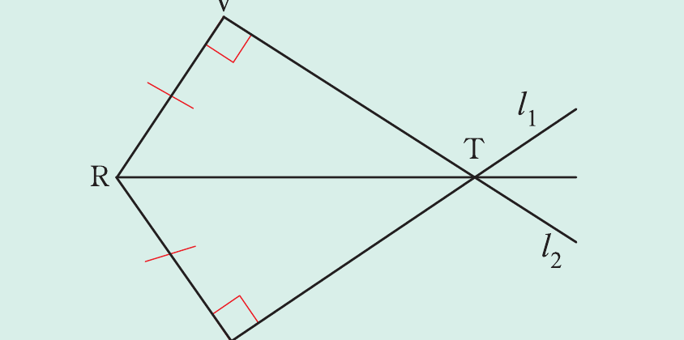

Example 2.11
In the following figure, point R is equidistant from two lines l1 and l2, which intersect at T. Prove that R̂TV = R̂TS.

Solution
Required to prove that R̂TV = R̂TS.
Proof: From △RVT and △RST, it follows that
RV = RS (given)
R̂VT = R̂ST (given)
RT is a common side.
Thus, △RVT ≅ △RST (by RHS).
Since △RVT ≅ △RST, it follows that all corresponding angles and sides are equal.
Therefore, R̂TV = R̂TS.